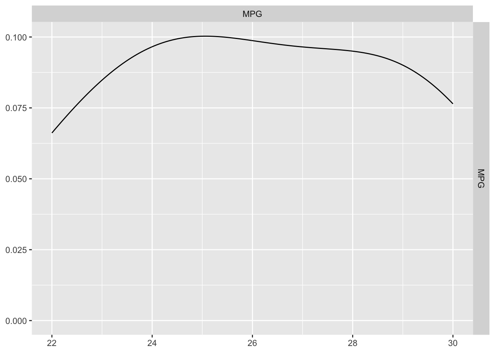
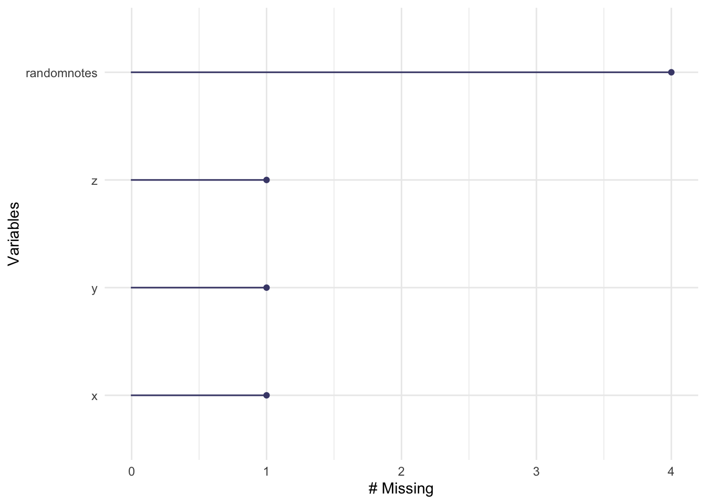
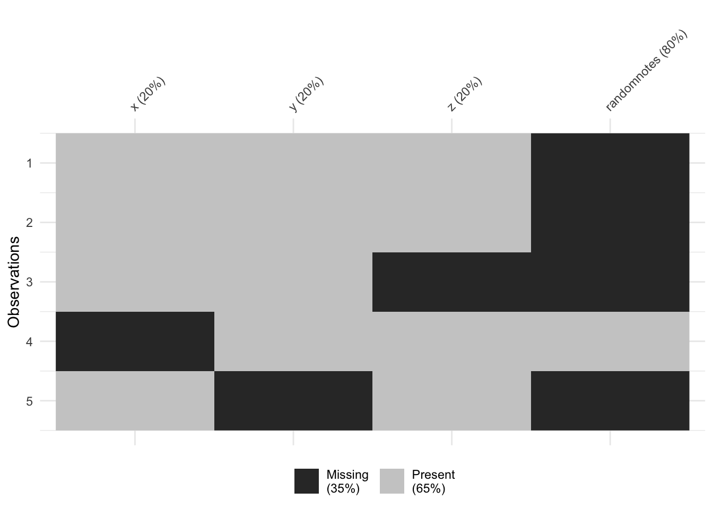

Before analyzing a dataset, it’s essential to understand its structure, size, and data types. It is then often useful to understand more about the data inside to help with quality control.
library(dplyr)
library(skimr)
library(GGally)The tutorial is based on a small test dataset with four columns:
Make (categorical)MPG (numerical)Cylinders (categorical)Transmission (categorical)# Create a simple dataset with numerical and categorical variables
test_data <- data.frame(
Make = factor(c("Toyota", "Ford", "Honda", "Chevy", "Nissan", "BMW")),
MPG = c(30, 25, 27, 22, 29, 24),
Cylinders = factor(c(4, 6, 4, 8, 4, 6)),
Transmission = factor(c("Auto", "Manual", "Auto", "Auto", "Manual", "Manual"))
)Before analyzing a dataset, it’s essential to understand its structure, size, and data types. This tutorial will guide you through:
To explore the dataset interactively, you can:
Open it in the RStudio Data Viewer:
Run View(test_data) in the console.
Note: View() should not be placed inside a code chunk
because it only works interactively in RStudio and does not produce
console output. It often breaks the knitting process
See a tabular preview in the environment
pane:
Click on test_data in the environment tab.
Print the entire dataset (not recommended for large datasets):
test_data## Make MPG Cylinders Transmission
## 1 Toyota 30 4 Auto
## 2 Ford 25 6 Manual
## 3 Honda 27 4 Auto
## 4 Chevy 22 8 Auto
## 5 Nissan 29 4 Manual
## 6 BMW 24 6 Manualhead(test_data)## Make MPG Cylinders Transmission
## 1 Toyota 30 4 Auto
## 2 Ford 25 6 Manual
## 3 Honda 27 4 Auto
## 4 Chevy 22 8 Auto
## 5 Nissan 29 4 Manual
## 6 BMW 24 6 ManualTo see what columns exist:
names(test_data)## [1] "Make" "MPG" "Cylinders" "Transmission"To find out how many rows and columns there are:
nrow(test_data) # Number of rows## [1] 6ncol(test_data) # Number of columns## [1] 4dim(test_data) # Dimensions (rows, columns)## [1] 6 4To get a compact summary of the dataset, str() provides
an overview, including the number of observations, variables, and data
types.
str(test_data)## 'data.frame': 6 obs. of 4 variables:
## $ Make : Factor w/ 6 levels "BMW","Chevy",..: 6 3 4 2 5 1
## $ MPG : num 30 25 27 22 29 24
## $ Cylinders : Factor w/ 3 levels "4","6","8": 1 2 1 3 1 2
## $ Transmission: Factor w/ 2 levels "Auto","Manual": 1 2 1 1 2 2Another alternative is glimpse() (from
dplyr):
glimpse(test_data)## Rows: 6
## Columns: 4
## $ Make <fct> Toyota, Ford, Honda, Chevy, Nissan, BMW
## $ MPG <dbl> 30, 25, 27, 22, 29, 24
## $ Cylinders <fct> 4, 6, 4, 8, 4, 6
## $ Transmission <fct> Auto, Manual, Auto, Auto, Manual, ManualEach column in a dataset has a specific data type (e.g., numeric, character, factor). “Factor” is the R jargon for variables that have a fixed number of unique values (e.g., categories/groups/families).
We can check the data types using:
sapply(test_data, class)## Make MPG Cylinders Transmission
## "factor" "numeric" "factor" "factor"If categorical variables are not stored as factors, we can explicitly define them:
test_data$Cylinders <- factor(test_data$Cylinders, levels = c(4, 6, 8))
test_data$Transmission <- factor(test_data$Transmission, levels = c("Auto", "Manual"))This ensures:
Similarly, if data “should” be numeric, but isn’t for some reason, we can convert it using as.numeric() etc.
Summary statistics are a way to summarize the main characteristics of
the data inside a dataset. They can be used to describe the central
tendency, dispersion, and shape of a dataset’s distribution.
We can use the summary() function to get a quick
overview of numerical variables.
summary(test_data)## Make MPG Cylinders Transmission
## BMW :1 Min. :22.00 4:3 Auto :3
## Chevy :1 1st Qu.:24.25 6:2 Manual:3
## Ford :1 Median :26.00 8:1
## Honda :1 Mean :26.17
## Nissan:1 3rd Qu.:28.50
## Toyota:1 Max. :30.00Alternatively, we can calculate specific summary statistics manually
using base R and dplyr.
# Using base R
mean(test_data$MPG) # Mean MPG## [1] 26.16667median(test_data$MPG) # Median MPG## [1] 26sd(test_data$MPG) # Standard deviation## [1] 3.060501range(test_data$MPG) # Minimum and maximum## [1] 22 30# Using dplyr
test_data %>%
summarise(
Mean_MPG = mean(MPG),
Median_MPG = median(MPG),
SD_MPG = sd(MPG),
Min_MPG = min(MPG),
Max_MPG = max(MPG)
)## Mean_MPG Median_MPG SD_MPG Min_MPG Max_MPG
## 1 26.16667 26 3.060501 22 30There are also specific summary commands from a variety of packages including
skimrThe skimr package provides an easy and readable summary
of the dataset.
skim(test_data)| Name | test_data |
| Number of rows | 6 |
| Number of columns | 4 |
| _______________________ | |
| Column type frequency: | |
| factor | 3 |
| numeric | 1 |
| ________________________ | |
| Group variables | None |
Variable type: factor
| skim_variable | n_missing | complete_rate | ordered | n_unique | top_counts |
|---|---|---|---|---|---|
| Make | 0 | 1 | FALSE | 6 | BMW: 1, Che: 1, For: 1, Hon: 1 |
| Cylinders | 0 | 1 | FALSE | 3 | 4: 3, 6: 2, 8: 1 |
| Transmission | 0 | 1 | FALSE | 2 | Aut: 3, Man: 3 |
Variable type: numeric
| skim_variable | n_missing | complete_rate | mean | sd | p0 | p25 | p50 | p75 | p100 | hist |
|---|---|---|---|---|---|---|---|---|---|---|
| MPG | 0 | 1 | 26.17 | 3.06 | 22 | 24.25 | 26 | 28.5 | 30 | ▃▇▁▃▇ |
GGallyThe GGally package provides useful visual summaries of
numerical variables.
if (!require(GGally)) install.packages("GGally", dependencies = TRUE)
library(GGally)
# Create pairwise scatter plots
GGally::ggpairs(test_data, columns = c("MPG"))
We can use table() or dplyr::count() to
summarize categorical variables. e.g. count how many rows there are in
different categories. This is especially useful for categorical
data.
The easiest way to do this is using the table command. For example to see how many cars have each type of transmission:
table(test_data$Transmission)##
## Auto Manual
## 3 3So there are three rows with automatic cars and three with manual, We can also make two way tables
table(test_data$Transmission, test_data$Cylinders)##
## 4 6 8
## Auto 2 0 1
## Manual 1 2 0So there are 2 cars that are automatic with four cylinders. We can also use the count function in dplyr
test_data %>% count(Transmission)## Transmission n
## 1 Auto 3
## 2 Manual 3We can also compute statistics such as the mean, maximum, and minimum values for different groups.
Using group_by() and summarise(), we can
compute statistics for each species:
test_data %>%
group_by(Transmission) %>%
summarise(
Mean_MPG = mean(MPG),
Median_MPG = median(MPG),
Count = n()
)## # A tibble: 2 × 4
## Transmission Mean_MPG Median_MPG Count
## <fct> <dbl> <dbl> <int>
## 1 Auto 26.3 27 3
## 2 Manual 26 25 3I admit, tidyverse is better in this case!
aggregate(cbind(MPG, MPG) ~ Transmission, data = test_data,
FUN = function(x) c(mean = mean(x, na.rm = TRUE), max = max(x, na.rm = TRUE)))## Transmission MPG.mean MPG.max MPG.mean MPG.max
## 1 Auto 26.33333 30.00000 26.33333 30.00000
## 2 Manual 26.00000 29.00000 26.00000 29.00000This tutorial explains how to filter, select, summarize, and wrangle data in R using both Tidyverse and Base R approaches.
Both approaches are valid, but they differ in syntax and philosophy.
Tidyverse functions (from dplyr) use a
pipeline-based approach, whereas Base R relies on
indexing and built-in functions.
# Load necessary packages
library(tidyverse) # Core data wrangling
library(palmerpenguins) # Example dataset
library(skimr) # Quick summary stats
library(GGally) # Pair plots
library(ggplot2) # VisualizationWe will use the penguins dataset from the
palmerpenguins package to demonstrate data wrangling
techniques.
data("penguins") # Load datasetSometimes we want to deal with only one specific column in our dataset, for example applying the mean command to say just one column.
To do this, we use the $ symbol. For example, here I’m simply selecting the data in the elevation column only and saving it to a new variable called elevationdata.
mean_mass <- penguins$body_mass_g
mean_massTry it yourself. You should have seen that as you typed the $, it gave you all the available column names to choose from. This means we can now easily summarise specific columns. For example:
summary(penguins) will create a summary of the whole
spreadsheet,summary(penguins$Price) will only summarise the Price
column.mean(penguins$Price) will take the mean of the Price
column in the HousesNY dataframe.Remember you have the names() command to help find these and that the
names are CASE SENSITIVE. If we want to work with several specific
columns (e.g., species, bill_length_mm, and
flipper_length_mm), we can extract them like this:
selected_data <- penguins %>% dplyr::select(species, bill_length_mm, flipper_length_mm)
head(selected_data)## # A tibble: 6 × 3
## species bill_length_mm flipper_length_mm
## <fct> <dbl> <int>
## 1 Adelie 39.1 181
## 2 Adelie 39.5 186
## 3 Adelie 40.3 195
## 4 Adelie NA NA
## 5 Adelie 36.7 193
## 6 Adelie 39.3 190selected_data <- penguins[, c("species", "bill_length_mm", "flipper_length_mm")]
head(selected_data)## # A tibble: 6 × 3
## species bill_length_mm flipper_length_mm
## <fct> <dbl> <int>
## 1 Adelie 39.1 181
## 2 Adelie 39.5 186
## 3 Adelie 40.3 195
## 4 Adelie NA NA
## 5 Adelie 36.7 193
## 6 Adelie 39.3 190Sometimes, we do not want to analyse at the entire data.frame. Instead, we would like to only look at one (or more) columns or rows.
There are several ways we can select data.
To choose a specific column, we can use the $ symbol
to select its name (as described above)
If you know which number rows or columns you want, you can use square brackets to numerically select data. Essentially our data follows the matrix format format:
\[
tablename [ ROWS , COLUMNS ]
\]
Some examples:
# This will select the data in the 5th row and 7th column
penguins[5,7]
# This will select the 2nd row and ALL the columns
penguins[2,]
# This will select the 3rd column and ALL the rows
penguins[,3]
# similar to using its name
penguins$island
# We can combine our commands, this will print the 13th row of the body mass column
# (no comma as we're only looking at one column)
penguins$body_mass_g[13]
# The : symbol lets you choose a sequence of numbers e.g. 1:5 is 1 2 3 4 5
# So this prints out rows 11 to 15 and all the columns
penguins[11:15,]
# The "c" command allows you to enter whatever numbers you like.
# So this will print out rows 4,3,7 and the "Elevation" and "Dist_to_Coast" columns
penguins[c(4,3,7), c("island","body_mass_g")]Or if you know the row or column number you can use the minus - sign to remove. Or use filter..
# remove row 6 and and overwrite
penguins <- penguins[-6 ,]
# remove columns 4 and 2 and save result to newdata
newdata <- penguins[, - c(2,4) ]Filtering means selecting only the rows that meet certain conditions.
which() helps find row numbers that match a
condition.filter() (from dplyr tidyverse) allows for
clear, intuitive filtering of data.&, |,
!=, %in%) provide additional flexibility in
specifying conditions.which() commandThe which() command helps us identify row indices that
meet a condition.
For example, identifying numbers greater than 107 in a sequence:
a <- 100:110
which(a > 107)I like it because you can read the command as a sentence e.g. which
numbers in “a” are greater than 107, Or which penguins have a
body_mass_g less than or equal to 3000g:
outlier_rows <- which(penguins$body_mass_g <= 3000)To find the row corresponding to the penguin with the smallest bill length:
row_number <- which(penguins$bill_length_mm == min(penguins$bill_length_mm, na.rm = TRUE))
smallest_bill <- penguins[row_number, ]
smallest_billWe can also use the tidyverse approach, the
dplyr::filter() function. All the condition symbols
e.g. !=NOT etc also work for the which command,
Selecting all Adelie penguins:
filter(penguins, species == "Adelie")Selecting multiple species using %in%:
filter(penguins, species %in% c("Adelie", "Chinstrap"))Excluding a species using !=:
filter(penguins, species != "Gentoo")Filtering penguins with a flipper length greater than 200 mm:
filter(penguins, flipper_length_mm > 200)Filtering penguins with a body mass less than or equal to 3000 g:
light_penguins <- filter(penguins, body_mass_g <= 3000)
summary(light_penguins)Filtering with multiple conditions:
filter(penguins, flipper_length_mm > 180 & species == "Adelie")Using | (OR condition) to select penguins with either a
bill_depth_mm greater than 18 or
flipper_length_mm longer than 210 mm:
filter(penguins, bill_depth_mm > 18 | flipper_length_mm > 210)Lets say you wanted to find the ratio between two columns of data, then save your answer as a new column
penguins$bill_ratio <- penguins$bill_length_mm / penguins$bill_depth_mmpenguins <- penguins %>% mutate(bill_ratio = bill_length_mm / bill_depth_mm)Sorting the data allows us to find the highest and lowest values in a dataset.
Sort by body mass (ascending):
penguins <- arrange(penguins, body_mass_g)Sort by descending order:
penguins <- arrange(penguins, desc(flipper_length_mm))penguins <- penguins[order(penguins$body_mass_g), ]penguins <- penguins[order(-penguins$flipper_length_mm), ]We can combine multiple operations into a single pipeline. The tidyverse is designed for this.
final_result <- penguins %>%
filter(flipper_length_mm > 180) %>%
mutate(bill_ratio = bill_length_mm / bill_depth_mm) %>%
select(species, bill_length_mm, flipper_length_mm, bill_ratio) %>%
arrange(desc(bill_ratio))filtered <- penguins[penguins$flipper_length_mm > 180, ]
filtered$bill_ratio <- filtered$bill_length_mm / filtered$bill_depth_mm
filtered <- filtered[order(-filtered$bill_ratio),
c("species", "bill_length_mm",
"flipper_length_mm", "bill_ratio")]
head(filtered)Before starting, ensure you have these packages installed and loaded:
library(skimr) # For detailed data summaries
library(dplyr) # For data manipulation
library(naniar) # For missing data visualization
library(tidyr) # Lots of useful functions for data cleaningHere are the commands covered in this guide to make it easy to
copy/paste. Remember to replace testdata with the name of
your dataset - and keep reading for what each command does.
#-------------------------------------------
# Visualizing Missing Data
#-------------------------------------------
summary(testdata) # Summary statistics
skim(testdata) # Skim summary (detailed)
colSums(is.na(testdata)) # Count NAs per column
rowSums(is.na(testdata)) # Count NAs per row
sum(is.na(testdata$x)) # Count NAs in column x
gg_miss_var(testdata) # naniar: Missing values per variable
vis_miss(testdata) # naniar: Heatmap of missing values
#-------------------------------------------
# Removing Rows with Missing Data
#-------------------------------------------
data_complete <- na.omit(testdata)
data_filtered <- testdata %>% dplyr::filter(!is.na(x) & !is.na(z))
# using tidyr
testdata <- testdata %>% replace_na(list(x = 0, y = "Unknown"))
testdata <- testdata %>% drop_na(x, y)
#-------------------------------------------
# Replacing missing values. In this case
# Replace NAs with 99
#-------------------------------------------
testdata$x <- ifelse(is.na(testdata$x), 99, testdata$x)
#-------------------------------------------
# Handling NAs in Common Functions
#-------------------------------------------
meanx <- mean(testdata$x, na.rm=TRUE)
sdx <- sd(testdata$x, na.rm=TRUE)
table(testdata$y, useNA = "ifany")
cor(testdata, use = "pairwise.complete.obs")
lm(z ~ x, data = testdata, na.action = na.omit) # Omitting NAs
lm(z ~ x, data = testdata, na.action = na.exclude) # Keeping track of NAs, prefer
Before making decisions about how to handle missing data, you need to
identify where it’s present. In R, NA represents missing
values. You might also encounter NaN (Not a Number), which
is another type of missing value.
When reading in external datasets, missing values may be represented differently. Common placeholders include:
-1 (often used in government datasets)99, -99, 9999,
999 (arbitrary placeholders for missing values)Understanding why data is missing is crucial before deciding how to handle it:
Key Takeaways: - If data is MCAR, deleting missing cases is often unbiased. - If data is MAR, multiple imputation methods may help recover missing values. - If data is MNAR, the missingness mechanism itself needs to be modeled.
If you know your dataset uses non-standard missing value indicators, you can explicitly define them when reading in the data. No matter what, check the data carefully to make sure you didn’ make a mistake.
data <- read.csv("data.csv", na.strings = c("", "NA", "-1", "99", "9999"))na.strings tells R which values should be treated as
NA.
This example converts empty strings (""), standard
NA, -1, 99, and 9999
into missing values.
library(readxl)
data <- read_excel("data.xlsx", na = c("", "NA", "-1", "999"))na defines missing values similarly to
na.strings in read.csv().tidyverse (readr
package)library(readr)
data <- read_csv("data.csv", na = c("", "NA", "-1", "999"))read_csv() is part of tidyverse and often
preferred for faster performance and better defaults.Before deciding how to handle missing data, it’s crucial to first identify where it’s present. Let’s create a small dataset with missing values. The final column includes many empty values to mimic real-world data.
testdata <- data.frame(
x = c(1, 2, 3, NA, 5),
y = c("A", "B", "C", "D", NA),
z = c(10, 15, NA, 20, 25),
randomnotes = c(NA, NA, NA, "hello", NA)
)
print(testdata)## x y z randomnotes
## 1 1 A 10 <NA>
## 2 2 B 15 <NA>
## 3 3 C NA <NA>
## 4 NA D 20 hello
## 5 5 <NA> 25 <NA>along with example outputs. I apply everything to the basic test data above.
Summary functions provide an overview of missing data:
summary(testdata) # Basic summary statistics## x y z randomnotes
## Min. :1.00 Length:5 Min. :10.00 Length:5
## 1st Qu.:1.75 Class :character 1st Qu.:13.75 Class :character
## Median :2.50 Mode :character Median :17.50 Mode :character
## Mean :2.75 Mean :17.50
## 3rd Qu.:3.50 3rd Qu.:21.25
## Max. :5.00 Max. :25.00
## NA's :1 NA's :1skim(testdata) # More detailed summary, including missing values| Name | testdata |
| Number of rows | 5 |
| Number of columns | 4 |
| _______________________ | |
| Column type frequency: | |
| character | 2 |
| numeric | 2 |
| ________________________ | |
| Group variables | None |
Variable type: character
| skim_variable | n_missing | complete_rate | min | max | empty | n_unique | whitespace |
|---|---|---|---|---|---|---|---|
| y | 1 | 0.8 | 1 | 1 | 0 | 4 | 0 |
| randomnotes | 4 | 0.2 | 5 | 5 | 0 | 1 | 0 |
Variable type: numeric
| skim_variable | n_missing | complete_rate | mean | sd | p0 | p25 | p50 | p75 | p100 | hist |
|---|---|---|---|---|---|---|---|---|---|---|
| x | 1 | 0.8 | 2.75 | 1.71 | 1 | 1.75 | 2.5 | 3.50 | 5 | ▇▇▇▁▇ |
| z | 1 | 0.8 | 17.50 | 6.45 | 10 | 13.75 | 17.5 | 21.25 | 25 | ▇▇▁▇▇ |
The naniar package provides helpful visualizations.
Install and load it before use.
gg_miss_var(testdata) # Missing values per variable
vis_miss(testdata) # Heatmap of missing values
You can count missing values at different levels:
colSums(is.na(testdata)) # Count NAs per column## x y z randomnotes
## 1 1 1 4rowSums(is.na(testdata)) # Count NAs per row## [1] 1 1 2 1 2sum(is.na(testdata$x)) # Count NAs in a specific column## [1] 1# Frequency table including missing values
table(testdata$y, useNA = "ifany")##
## A B C D <NA>
## 1 1 1 1 1Missing data can cause errors in analyses, so it is often necessary to handle it appropriately. Removing missing data is only advisable when the data is Missing Completely at Random (MCAR).
Listwise deletion, or Complete Case Analysis, removes entire rows if any column contains missing data. This can significantly reduce your dataset, so use it with caution.
data_complete <- na.omit(testdata) # Remove rows with any NA
# Check for potential bias introduced by removal:
summary(data_complete)## x y z randomnotes
## Min. : NA Length:0 Min. : NA Length:0
## 1st Qu.: NA Class :character 1st Qu.: NA Class :character
## Median : NA Mode :character Median : NA Mode :character
## Mean :NaN Mean :NaN
## 3rd Qu.: NA 3rd Qu.: NA
## Max. : NA Max. : NAWarning: If many columns have missing data (especially ones you don’t care about, such as “notes”), then this method may remove too many observations. For example in this case, I removed most of my valuable information.
If you want to only remove rows with missing values in a single column, we can use the complete cases command. E.g. take the testdata table and ONLY include objects that are not missing their x-value. Note, this can be any column name at all.
data_filtered <- testdata[complete.cases(testdata$x), ]You can also do this manually using filter and the
is.na() command
# Tidyverse
data_filtered <- testdata %>%
dplyr::filter(!is.na(x) & !is.na(z))
# BaseR
data_filtered <- testdata[which(!is.na(testdata$x) & !is.na(testdata$z)), ]Sometimes, you have -999 or something as your missing datacode and you missed it reading in the data. You can also use the filter command to force data to be NA.
E.g. here I select all the prices in a house dataset that are less than 0 (e.g impossible) and set them to NA.
HousesNY$Price[HousesNY$Price < 0] <- NAE.g. here I select all the prices that are less than 0 (e.g impossible) and set them to NA.
This is useful when you want to keep the row but replace the missing value with a specific number.
testdata$x <- ifelse(is.na(testdata$x), 99, testdata$x) # Replace NAs with 99tidyr packageThe tidyr package provides a more elegant way to replace
NAs. Remember to load/install it first!
Using tidyr::replace_na()
testdata <- testdata %>% replace_na(list(x = 0, y = "Unknown"))Filtering Out NAs Using drop_na()
(tidyr)
testdata <- testdata %>% drop_na(x, y) # Removes rows where x or y is NAYou don’t always have to remove missing data in advance. Many R
functions allow you to handle missing values within the function itself,
preventing unnecessary data loss. The best way to check if a function
has an option for handling missing values is to look at its help file
using ?function_name.
If there is missing data, then by default, R will set the answer to any statistics to also be missing.
Remember this is our test data
print(testdata)## x y z randomnotes
## 1 1 A 10 <NA>
## 2 2 B 15 <NA>
## 3 3 C NA <NA>
## 4 99 D 20 hello
## 5 5 Unknown 25 <NA>Taking the mean of z results in NA
# Take the mean of column B
mean(testdata$z)## [1] NA# Take the correlation between A and B
cor(testdata$x,testdata$z)## [1] NABut many commands include an option (often na.rm=TRUE)
which you can add to ignore missing data
# na.rm e.g. remove NAs = TRUE
mean(testdata$z, na.rm=TRUE)## [1] 17.5sd(testdata$z, na.rm=TRUE)## [1] 6.454972or sometimes I look in the help file (or on google) for the exact terminology that I need. For example, for correlation, there are several options including
#the cor command doesn't follow the pattern.
cor(testdata$x,testdata$z,use = "complete.obs")## [1] 0.2919672Tidyverse generally follows an explicit missing data
handling approach. Instead of relying on
na.action, most functions require you to handle missing
values before applying them. For example:
mutate(),
summarize()) require na.rm = TRUE
explicitly.drop_na() and
replace_na() for explicit handling.NA by default unless
specified.Instead of removing entire rows, pairwise deletion calculates correlations using all available data for each pair of variables.
cor(testdata, use = "pairwise.complete.obs")
# Correlation matrix with pairwise deletionWhen to use this?
**I SUGGEST na.exclude UNLESS YOU HAVE A VERY GOOD REASON*!**
Many modeling functions in R allow specifying how to handle missing
data using na.action.
# Default: Removes rows with missing values
model1 <- lm(z ~ x, data = testdata, na.action = na.omit)
# Keeps track of missing values and preserves original structure in predictions
model2 <- lm(z ~ x, data = testdata, na.action = na.exclude)| Method | What It Does | When to Use |
|---|---|---|
na.omit |
Removes rows with missing data and drops them from predictions | When missing data is truly random and you don’t need predictions for those cases |
na.exclude |
Removes rows with missing data but keeps NA in
predictions |
When you need predictions to include NA in the same
rows as the original missing data |
na.exclude Works in Predictionspredict(model1) # Predictions only for complete cases## 1 2 4 5
## 16.49309 16.53220 20.32520 16.64951predict(model2) # Predictions with missing values retained as NA## 1 2 3 4 5
## 16.49309 16.53220 NA 20.32520 16.64951This keeps the structure of the dataset intact, which is important in time series or longitudinal analyses where the position of missing values matters.